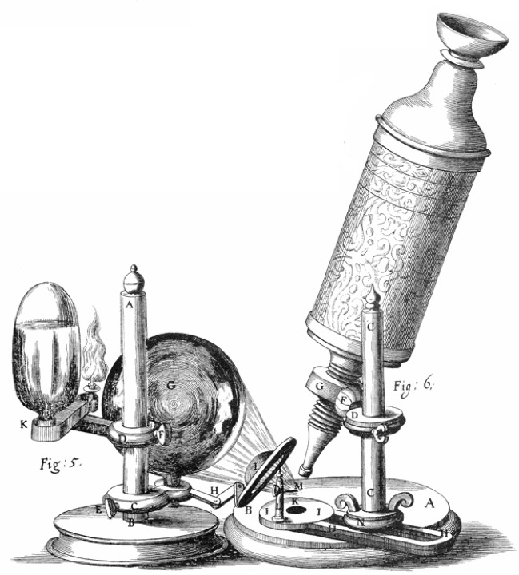
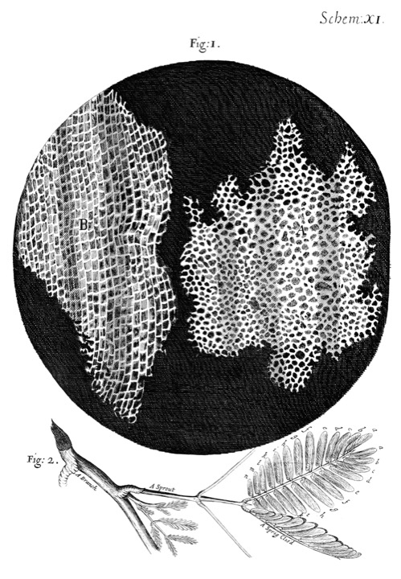
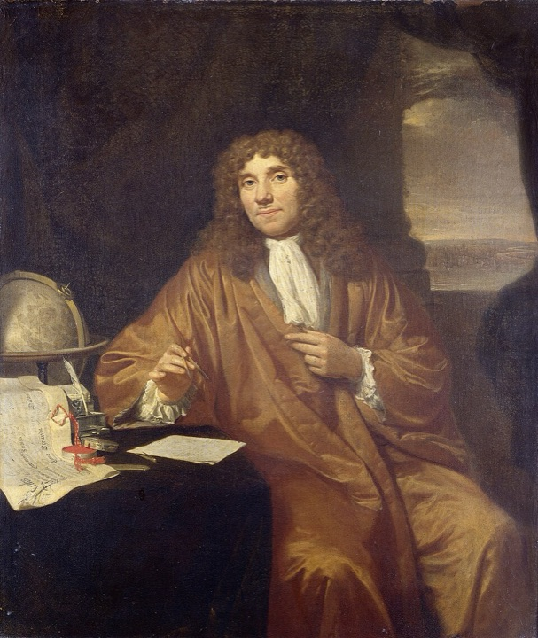
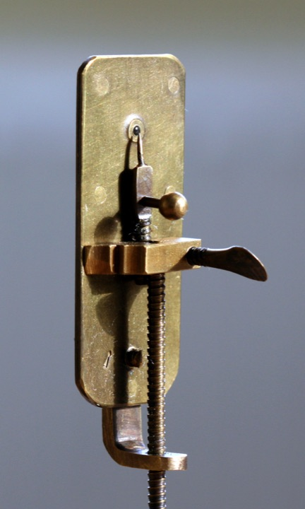

Chapitre 1·SVTDécouverte scientifique
1665
Les premiers regards dans l'invisible
Robert Hooke (1635-1703) · Antoni van Leeuwenhoek (1632-1723)
L'essentiel
Vers 1590, des lunetiers hollandais (on cite souvent Hans et Zacharias Janssen) ont l'idée d'aligner deux lentilles dans un tube : c'est le microscope composé. Soixante-quinze ans plus tard, l'Anglais Robert Hooke améliore cet instrument et publie Micrographia, un livre rempli de dessins de puces, de moisissures et d'objets minuscules.
En observant une fine tranche de liège, il voit des milliers de petites cases vides qui lui rappellent les chambres des moines. Il les appelle « cells », cellules. En réalité, il ne voyait que les parois de cellules mortes.
Le mot « cellule » vient du latin cella, « petite chambre ».Hooke a donné un nom à la cellule, mais sans comprendre son rôle dans le vivant.
Et Leeuwenhoek ?
À Delft, le drapier Antoni van Leeuwenhoek fabrique ses propres microscopes avec une seule minuscule lentille, polie avec une précision incroyable. Ils grossissent jusqu'à environ 270 fois, bien mieux que ceux de Hooke.
À partir de 1674, il observe dans l'eau d'un lac, dans de l'eau poivrée ou dans le tartre de ses dents des êtres vivants invisibles à l'œil nu : il les appelle des « animalcules ». Ce sont des micro-organismes, dont des bactéries. Il observe aussi les globules rouges et les spermatozoïdes.
Expérience Refaire l'observation de Hooke
- Découper une lamelle très fine de bouchon de liège (ou prendre un épiderme d'oignon).
- La déposer sur une lame avec une goutte d'eau, recouvrir d'une lamelle.
- Observer au microscope au grossissement ×40, puis ×100 et ×400.
- Dessiner ce que l'on voit et ajouter une échelle.
On retrouve le « nid d'abeille » dessiné par Hooke en 1665 : chaque case est une cellule.




Animation · Une goutte d'eau de mare
Que voyait Leeuwenhoek ?
À l'œil nu, une goutte d'eau paraît vide : notre œil ne distingue pas les détails plus petits qu'environ 0,1 mm. Augmentez le grossissement pour faire apparaître les animalcules.
Vidéos pour aller plus loin
Sources du chapitre 1
- R. Hooke, Micrographia (1665), texte intégral : Projet Gutenberg
- N. Lane, « The unseen world: reflections on Leeuwenhoek (1677) », Philosophical Transactions of the Royal Society B, 2015 : doi.org/10.1098/rstb.2014.0344
- Wikipédia : Robert Hooke, Antoni van Leeuwenhoek